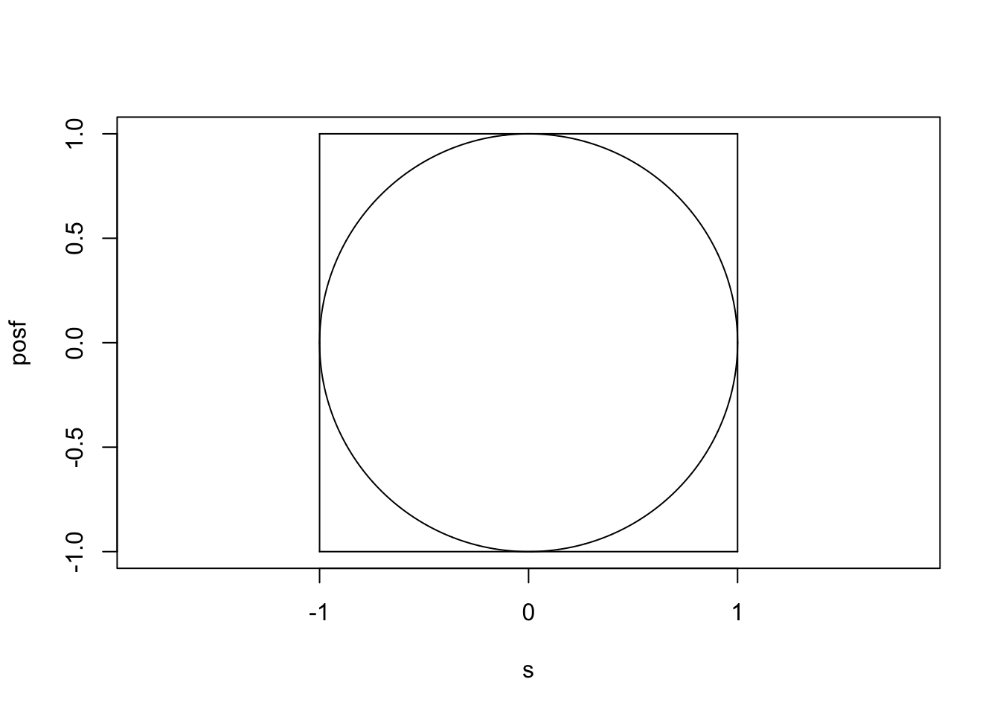
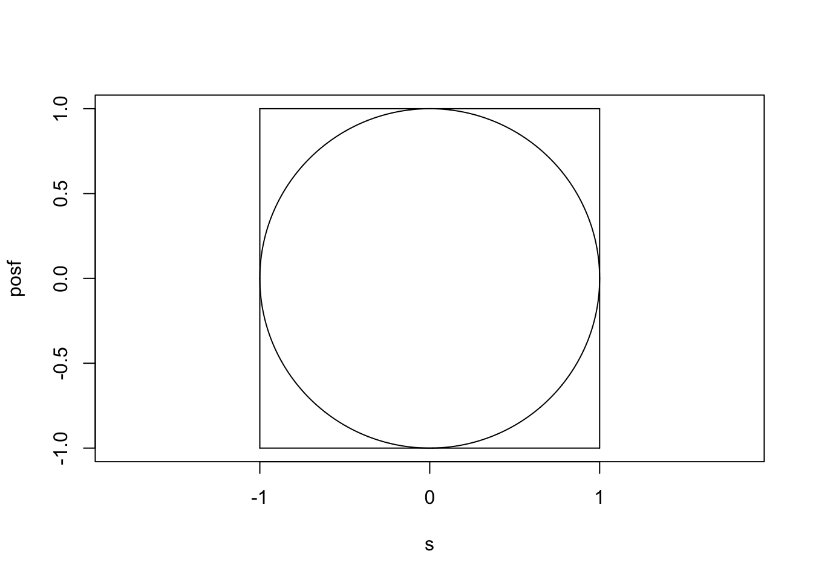
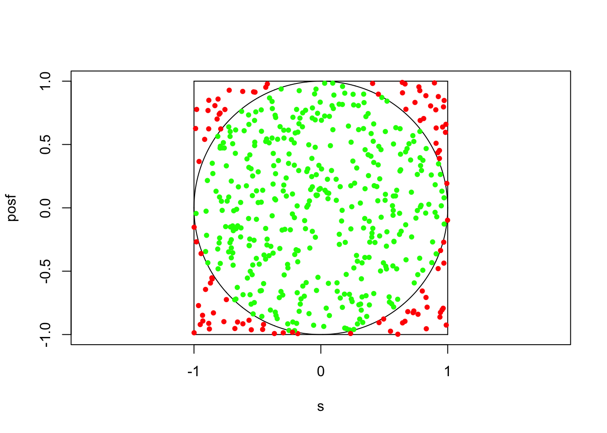
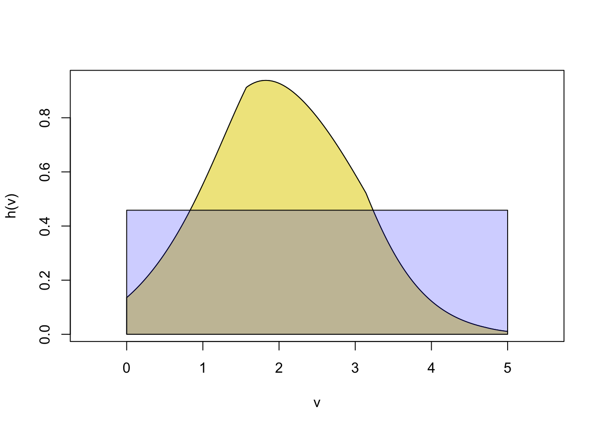
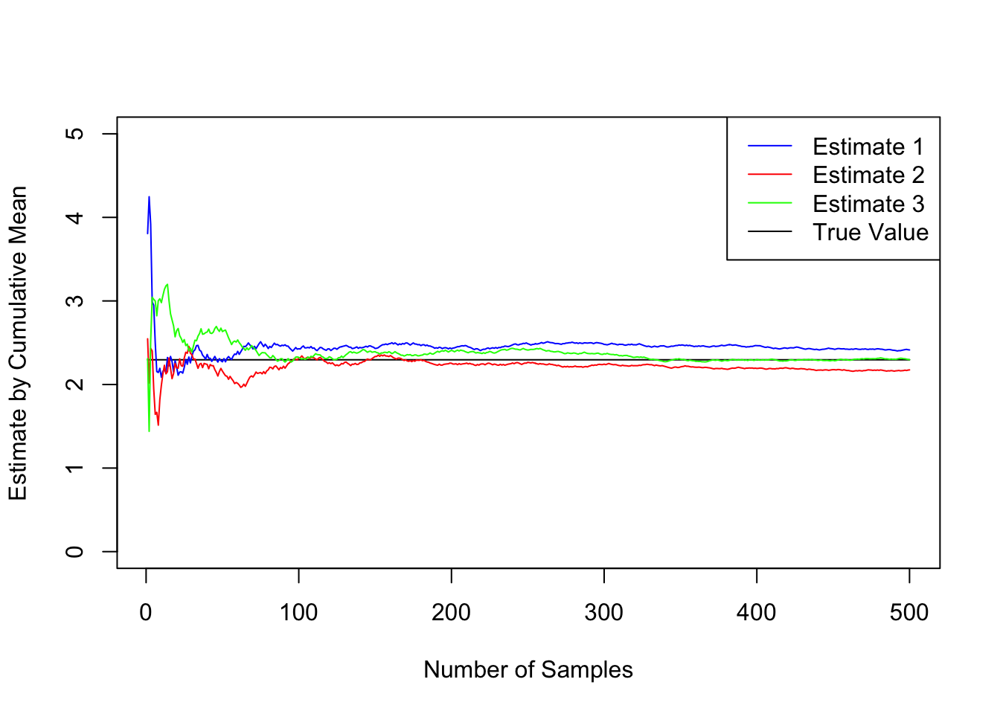
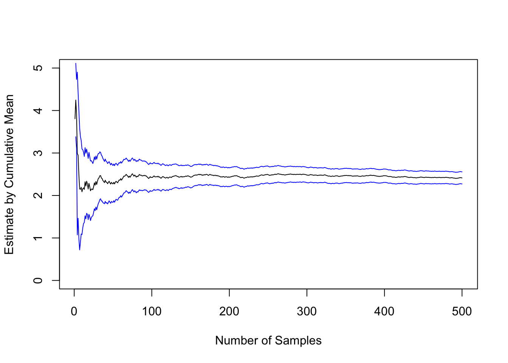
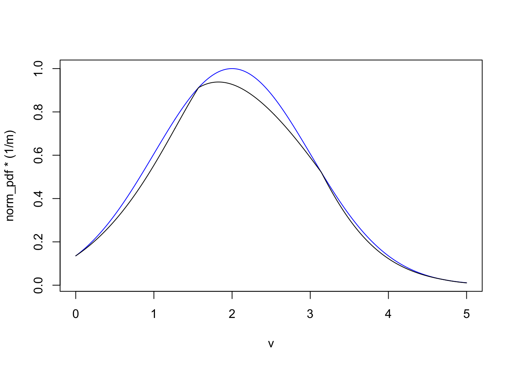
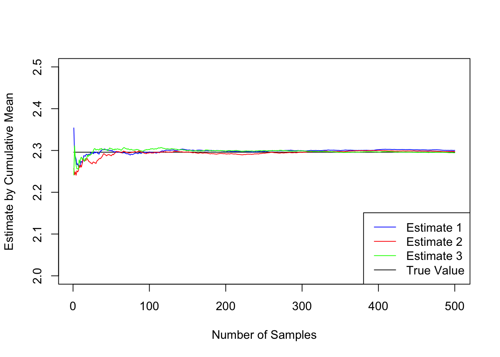
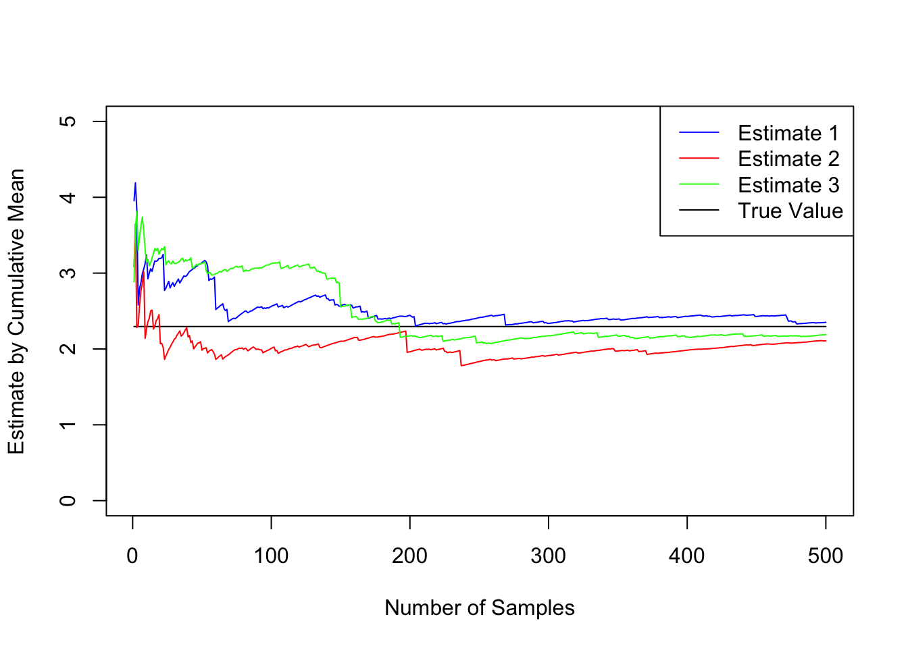

s <- seq(-1, 1, by = 0.001)
posf <- sqrt(1 - s ^ 2)
plot(s, posf, type = "l", asp = 1, ylim = c(-1, 1))
lines(s, -1 * posf)
segments(-1, -1, -1, 1)
segments(-1, -1, 1, -1)
segments(1, 1, -1, 1)
segments(1, 1, 1, -1)
Amaeya Deshpande
Homework Questions and text copyright Miles Chen. For personal use only. Do not post or distribute without permission.
Do not post your solutions online on a site like github. Violations will be reported.
There is no separate instruction file. This file is the instructions and you will modify it for your submission.
You will submit two files.
102c_hw2_output_First_Last.pdf Your output file. You will submit the output to Gradescope. This is the primary file that will be graded. Make sure all requested output is visible in the output file.
102c_hw2_output_First_Last.Rmd Take this R Markdown file and make the necessary edits so that it generates the requested output. You will submit the Rmd file to CCLE.
Modifying the following statement with your name.
“By including this statement, I, Amaeya Deshpande, declare that all of the work in this assignment is my own original work. At no time did I look at the code of other students nor did I search for code solutions online. I understand that plagiarism on any single part of this assignment will result in a 0 for the entire assignment and that I will be referred to the dean of students.”
Reading is important!
A simple Monte Carlo Exercise … Get an estimate of pi by using random uniform numbers. (It won’t be a very good estimate.)
In this first exercise, we can see how a simple source of randomness (in our case, R’s runif() function) can be used to estimate tough quantities.
We will find an estimate of pi by estimating the ratio between the area of a circle and its encompassing square.
s <- seq(-1, 1, by = 0.001)
posf <- sqrt(1 - s ^ 2)
plot(s, posf, type = "l", asp = 1, ylim = c(-1, 1))
lines(s, -1 * posf)
segments(-1, -1, -1, 1)
segments(-1, -1, 1, -1)
segments(1, 1, -1, 1)
segments(1, 1, 1, -1)
To calculate the area of the circle analytically, we would need to integrate the function drawing the upper semi-circle and then multiply that by 2. This process requires the use of trig substitutions, and while doable, can illustrate a time where the analytic solution is not easy.
\[Area = 2 \times \int_{-1}^1 \sqrt{1 - x^2} dx\]
For the Monte-Carlo approach, we will use runif(n, min = -1, max=1) to generate a bunch of random pairs of x and y coordinates. We will see how many of those random uniform points fall within the circle. This is easy - just see if \(x^2 + y^2 \le 1\). The total area of the square is 4. The total area of the circle is pi. Thus, the proportion of coordinates that satisfy the inequality \(x^2 + y^2 \le 1 \approx \pi/4\).
Instructions:
set.seed(123)
x <- runif(500, min = -1, max = 1)
y <- runif(500, min = -1, max = 1)
inside <- x^2 + y^2 <= 1
prop_inside <- sum(inside) / 500
pi_est <- prop_inside * 4
print(paste("Estimate for pi: ", pi_est))[1] "Estimate for pi: 3.2"s <- seq(-1, 1, by = 0.001)
posf <- sqrt(1 - s ^ 2)
plot(s, posf, type = "l", asp = 1, ylim = c(-1, 1))
lines(s, -1 * posf)
segments(-1, -1, -1, 1)
segments(-1, -1, 1, -1)
segments(1, 1, -1, 1)
segments(1, 1, 1, -1)
points(x, y, pch = 20, col = ifelse(inside, "green", "red"))
Estimate the integral of the following function by using Monte Carlo integration.
\[I = \int_0^5 h(x) dx = \int_0^5 \exp(-0.5 (x-2)^2 - 0.1 |\sin(2x)|) dx\]
We want to estimate the value of I, the area under the curve from 0 to 5. We can say that area is equal to the average value of \(h(x)\) times the width:
\[I = 5 \cdot \mathbb{E}_f[h(X)]\]
# what the function looks like
h <- function(x) {exp(-0.5 * (x - 2) ^ 2 - 0.1 * abs( sin(2 * x) ) )}
v <- seq(0, 5, by = 0.01)
plot(v, h(v), type = "l", xlim = c(-0.5, 5.5))
polygon(c(0, v, 5), c(0, h(v), 0), col = 'khaki')
rect_ht = 0.458394 # height of rectangle is the Expected value of h(x)
polygon(c(0, 0, 5, 5), c(0, rect_ht, rect_ht, 0), col = rgb(0, 0, 1, .2))
For MC integration, we estimate
\[\mathbb{E}_f[h(X)] = \int_\mathcal{X} h(x)f(x) dx\]
For this first problem, we will use the uniform distribution on the interval (0,5) to draw samples of x. Thus, the PDF, \(f(x)\) is
\[f(x) = 1/5\]
Thus,
\[ I = 5 \cdot \mathbb{E}_f[h(X)] = 5 \cdot \int_0^5 h(x) f(x) dx \approx \frac{5}{N}\sum_{j = 1}^N h(x_j) = \hat I\]
Where \(x_j \sim \text{Unif}(0,5)\)
Generate a sample of 5000 values of x to estimate \(\hat{I}\). Use runif() to generate the random uniform values.
Create a plot using the cumulative mean (aka running mean) of the first 500 values in the sample to show how the estimate of the integral ‘settles’ over the course of the sampling.
Do this two more times (each with a different starting seed), for a total of three samples of 5000 values each. Plot the cumulative mean of the first 500 values of each sample. There will be three different lines on this plot.
In your plot also include the ‘true’ value of the integral, 2.29583, as a horizontal line.
Print out your three estimates of \(I\).
Attaching package: 'dplyr'The following objects are masked from 'package:stats':
filter, lagThe following objects are masked from 'package:base':
intersect, setdiff, setequal, unionh <- function(x) {exp(-0.5 * (x - 2) ^ 2 - 0.1 * abs( sin(2 * x) ) )}
## Monte Carlo Integration using uniform random sampling
n = 5000 # total number of values to generate
k = 500 # number of values to plot
# First series
set.seed(1)
x1 <- runif(n, min = 0, max = 5)
h_vals1 <- h(x1)
I_est1 <- (5 / n) * sum(h_vals1)
cum_mean1 <- cummean(h_vals1[1:k]) * 5
# second series
set.seed(2)
x2 <- runif(n, min = 0, max = 5)
h_vals2 <- h(x2)
I_est2 <- (5 / n) * sum(h_vals2)
cum_mean2 <- cummean(h_vals2[1:k]) * 5
# third series
set.seed(3)
x3 <- runif(n, min = 0, max = 5)
h_vals3 <- h(x3)
I_est3 <- (5 / n) * sum(h_vals3)
cum_mean3 <- cummean(h_vals3[1:k]) * 5
print(paste("Estimate for I with seed 1:", I_est1))[1] "Estimate for I with seed 1: 2.27626784048365"[1] "Estimate for I with seed 2: 2.26402222241221"[1] "Estimate for I with seed 3: 2.29369518890943"plot(x = c(1, 500), y = c(2.29583, 2.29583), type = "l", ylim = c(0, 5),
xlab = "Number of Samples", ylab = "Estimate by Cumulative Mean")
lines(x = 1:500, y = cum_mean1, col = "blue")
lines(x = 1:500, y = cum_mean2, col = "red")
lines(x = 1:500, y = cum_mean3, col = "green")
legend("topright", legend = c("Estimate 1", "Estimate 2", "Estimate 3",
"True Value"), col = c("blue", "red", "green", "black"), lty = 1)
We can estimate the variance of \(\bar h_n\) with \(v_n = \frac{1}{n^2}\sum_{j=1}^N [ h(x_j) - \bar h_n]^2\).
What is variance of the estimate \(\hat I\)?
Write the formula for estimated variance of I-hat with latex:
\[Var(\hat I) = \frac{25}{n^2}\sum_{j=1}^N [ h(x_j) - \bar h_n]^2\]
Look at your first Monte Carlo series and estimate the running variance of \(\hat I\) as n goes from 1 to 500.
Create a plot of the \(\hat I\) with 95% confidence bounds above and below.
cum_est <- cum_mean1[1:500]
cum_var <- numeric(500)
for (i in 1:500) {
cum_var[i] <- var(h_vals1[1:i]) * 25
}
upper_bound <- cum_est + qnorm(0.975) * sqrt(cum_var / 1:500)
lower_bound <- cum_est + qnorm(0.025) * sqrt(cum_var / 1:500)
plot(x = 1:500, y = cum_est, type = "l", ylim = c(0, 5),
xlab = "Number of Samples", ylab = "Estimate by Cumulative Mean")
lines(x = 1:500, y = upper_bound, col = "blue")
lines(x = 1:500, y = lower_bound, col = "blue")
With importance sampling, we won’t draw from the distribution \(f(x)\), but from a proposal distribution \(g(x)\). This can be useful if we don’t know how to draw samples directly from \(f(x)\).
We revisit the previous problem with importance sampling. Even though it is easy to draw from \(f(x)\), which is the uniform distribution, we may see that it can be advantageous to draw from a different distribution that more closely resembles the target function.
We will use something that looks like the normal distribution N(2, 1) as the trial distribution to estimate the same integral by importance sampling.
\[I = \int_0^5 \exp(-0.5 (x-2)^2 - 0.1 |\sin(2x)|) dx\]
\[I = 5 \cdot \mathbb{E}_f[h(X)] = 5 \cdot \int_0^5 h(x) f(x) dx = 5 \cdot \int_0^5 h(x) \frac{f(x)}{g(x)} g(x)dx = 5 \cdot \mathbb{E}_g\left[h(X)\frac{f(x)}{g(x)}\right] \approx \frac{5}{N}\sum_{j = 1}^N h(x_j)\frac{f(x_j)}{g(x_j)}\]
# what the function looks like, along with the normal distribution
h <- function(x) {exp(-0.5 * (x - 2) ^ 2 - 0.1 * abs( sin(2 * x) ) )}
v <- seq(0, 5, by = 0.01)
norm_pdf <- dnorm(v, mean = 2, sd = 1)
optimize(f = function(x){ dnorm(x,2,1) / h(x) }, interval = c(0, 5))$minimum
[1] 3.141592
$objective
[1] 0.3989423# The function inside optimize is the proposal g(x) divided by the function h(x).
# Optimize gives the location where the ratio between the proposal pdf and target function is smallest.
# If we multiply the proposal distribution by 1/ratio, then the proposal distribution will always be >=
# target distribution. So we use this value as our constant M.
m <- optimize(f = function(x){ dnorm(x, 2, 1) / h(x) }, interval = c(0, 5))$objective
# Technically, this does not matter at all for importance sampling, but it makes it easier visually to
# see that the trial distribution matches the desired function quite well.
plot(v, norm_pdf * (1 / m), type = "l", col = "blue") # trial distribution
lines(v, h(v), type = "l", col = "black") # desired function
We will use rnorm() to generate random normal values and use importance sampling to estimate \(\hat{I}\).
Keep in mind that \(f(x) = 1/5\).
Let \(g(x)\) be the proposal distribution we will use. \(g(x)\) looks very much like the normal density with mean 2 and sd 1. However, it is slighlty different because we will throw away any values outside of the range (0, 5).
If we use the normal PDF directly, then \(g(x)\) is not a probability density because it does not integrate to 1.
\[\int_{0}^5 \text{Normal PDF (2,1)} \ne \int_{-\infty}^\infty \text{Normal PDF (2,1)} = 1\]
To fix this, we need to find a normalizing constant.
\[g(x) = \frac{\text{Normal PDF (2,1)}}{Z_r}\]
Such that:
\[\int_{0}^5 g(x) = 1\]
Find \(Z_r\) so that \(\int_{0}^5 \frac{1}{Z_r} \text{Normal PDF (2,1)} = 1\). Hint: figure out how much of the distribution is ‘cut off’ at 0 and 5, and find \(Z_r\) accordingly.
Perform Importance sampling.
Generate a sample of 5000 values of x to estimate \(\hat{I}\).
This time, do not sample values from runif(), but rather from rnorm() with mean 2 and standard deviation 1. Make sure you remove values of x below 0 and above 5. Adjust how the estimate of the integral is calculated according to importance sampling as well as using the normalizing constant with the normal density.
Create a plot using the cumulative mean (aka running mean) of the first 500 values in the sample to show how the estimate of the integral ‘settles’ over the course of the sampling.
Do this two more times (each with a different starting seed), for a total of three samples of 5000 values each. Plot the cumulative mean of the first 500 values of each sample.
In your plot also include the ‘true’ value of the integral, 2.29583, as a horizontal line.
When you create your plot, also adjust the axes to fit the samples better.
Finally, print out your three estimates of \(I\), and also comment on how quickly the method using importance sampling converges to the expected value versus the uniform sampling method.
## Monte Carlo Integration using importance sampling
n = 5000
k = 500
# First series
set.seed(1)
x1 <- rnorm(n, 2, 1)
x1 <- x1[x1 > 0 & x1 < 5]
h_vals1 <- h(x1)
weights1 <- (1 / 5) / (dnorm(x1, 2, 1) / z_r)
I_est1 <- (5 / length(x1)) * sum(h_vals1 * weights1)
cum_mean1 <- 5 * cumsum(h_vals1[1:k] * weights1[1:k]) / seq_along(x1[1:k])
# Second series
set.seed(2)
x2 <- rnorm(n, 2, 1)
x2 <- x2[x2 > 0 & x2 < 5]
h_vals2 <- h(x2)
weights2 <- (1 / 5) / (dnorm(x2, 2, 1) / z_r)
I_est2 <- (5 / length(x2)) * sum(h_vals2 * weights2)
cum_mean2 <- 5 * cumsum(h_vals2[1:k] * weights2[1:k]) / seq_along(x2[1:k])
# Third series
set.seed(3)
x3 <- rnorm(n, 2, 1)
x3 <- x3[x3 > 0 & x3 < 5]
h_vals3 <- h(x3)
weights3 <- (1 / 5) / (dnorm(x3, 2, 1) / z_r)
I_est3 <- (5 / length(x3)) * sum(h_vals3 * weights3)
cum_mean3 <- 5 * cumsum(h_vals3[1:k] * weights3[1:k]) / seq_along(x3[1:k])
print(paste("Estimate for I with seed 1:", I_est1))[1] "Estimate for I with seed 1: 2.29700774779758"[1] "Estimate for I with seed 2: 2.29365541728644"[1] "Estimate for I with seed 3: 2.2941144034467"plot(x = c(1, 500), y = c(2.29583, 2.29583), type = "l", ylim = c(2, 2.5),
xlab = "Number of Samples", ylab = "Estimate by Cumulative Mean")
lines(x = 1:k, y = cum_mean1, col = "blue")
lines(x = 1:k, y = cum_mean2, col = "red")
lines(x = 1:k, y = cum_mean3, col = "green")
legend("bottomright", legend = c("Estimate 1", "Estimate 2", "Estimate 3",
"True Value"), col = c("blue", "red", "green", "black"), lty = 1)
What we find is that the values converge much faster. The reason for this is that \(h(x)\) and \(g(x)\) are nearly proportional to each other. That is to say that the variance of \((h(x)/g(x))\) is very low.
In the previous problem, we had to find the normalizing constant \(Z_C\), so that the density from which we drew values would still integrate to 1. We drew values from the normal density, which is well understood, so calculating this constant \(Z_c\) was not too difficult.
In some situations, however, it is not always possible to calculate the normalizing constants for our densities.
We may only know a function \(q(x)\) that is proportional to the target density \(f(x)\). If is equal to \(q(x)\) divided by some unknown normalizing constant \(Z_q\):
\[f(x) = q(x)/Z_q\]
Similarly, there may be a function \(r(x)\) that is proportional to the proposal distribution \(g(x)\). In this scenario, we assume we are able to generate values from \(g(x)\), but we just don’t know the exact function equation for \(g(x)\). Instead, we know the function \(r(x)\) is proportional to \(g(x)\), and the normalizing constant \(Z_r\) is unknown.
\[g(x) = r(x)/Z_r\]
In our scenario, we can generate values from the proposal distribution \(g(x)\). \(g(x)\) is proportional to the normal distribution with mean 2 and standard deviation 1. We will call the PDF of the normal distribution \(r(x)\), keeping in mind that \(g(x) = r(x)/Z_r\). We can generate random values easily using rnorm() and then throwing away any value larger than 5 or less than 0. We can also easily find the value of the function \(r(x)\) by using dnorm().
Unlike the previous problem, we will not calculate the normalizing constant \(Z_r\) for \(g(x)\). Instead, we will perform self-normalizing Importance Sampling.
In self-normalizing importance sampling, we do not bother with calculating these normalizing constants.
We can estimate
\[\mathbb{E}_f[h(X)] \approx \frac{\sum_{j = 1}^N h(x_j) w(x_j)}{\sum_{j = 1}^N w(x_j)}\]
Where
\[w(x_j) = \frac{q(x_j)}{r(x_j)}\]
Perform Self-normalizing Importance sampling.
Generate a sample of 5000 values of x to estimate \(\hat{I}\).
Let \(f(x)\) be the uniform distribution from 0 to 5. You can let \(q(x)\) be 0.2, and \(Z_q = 1\).
Let \(g(x)\) be proportional to the normal distribution with mean 2 and sd 1. We can let \(r(x)\) be the normal PDF, and leave \(Z_r\) unknown.
Adjust how the estimate of the integral is calculated according to self-normalized importance sampling.
Create a plot using the cumulative mean (aka running mean) of the first 500 values in the sample to show how the estimate of the integral ‘settles’ over the course of the sampling.
Do this two more times (each with a different starting seed), for a total of three samples of 5000 values each. Plot the cumulative mean of the first 500 values of each sample.
In your plot also include the ‘true’ value of the integral, 2.29583, as a horizontal line.
When you create your plot, also adjust the axes to fit the samples better.
Finally, print out your three estimates of \(I\), and also comment on how quickly the method using importance sampling converges to the expected value versus the uniform sampling method.
Keep in mind that because we are estimating the normalizing constant \(Z_r\) using our samples, the performance of the self-normalizing method will not be as good as when we knew \(Z_r\) directly.
## Monte Carlo Integration using self-normalizing importance sampling
n = 5000
k = 500
q <- 0.2
# First series
set.seed(1)
x1 <- rnorm(n, 2, 1)
x1 <- x1[x1 > 0 & x1 < 5]
h_vals1 <- h(x1)
r1 <- dnorm(x1, 2, 1)
weights1 <- q / r1
I_est1 <- 5 * sum(h_vals1 * weights1) / sum(weights1)
cum_mean1 <- 5 * cumsum(h_vals1[1:k] * weights1[1:k]) / cumsum(weights1[1:k])
# Second series
set.seed(2)
x2 <- rnorm(n, 2, 1)
x2 <- x2[x2 > 0 & x2 < 5]
h_vals2 <- h(x2)
r2 <- dnorm(x2, 2, 1)
weights2 <- q / r2
I_est2 <- 5 * sum(h_vals2 * weights2) / sum(weights2)
cum_mean2 <- 5 * cumsum(h_vals2[1:k] * weights2[1:k]) / cumsum(weights2[1:k])
# Third series
set.seed(3)
x3 <- rnorm(n, 2, 1)
x3 <- x3[x3 > 0 & x3 < 5]
h_vals3 <- h(x3)
r3 <- dnorm(x3, 2, 1)
weights3 <- q / r3
I_est3 <- 5 * sum(h_vals3 * weights3) / sum(weights3)
cum_mean3 <- 5 * cumsum(h_vals3[1:k] * weights3[1:k]) / cumsum(weights3[1:k])
print(paste("Estimate for I with seed 1:", I_est1))[1] "Estimate for I with seed 1: 2.2834276456526"[1] "Estimate for I with seed 2: 2.24511503235841"[1] "Estimate for I with seed 3: 2.33700377077445"plot(x = c(1, 500), y = c(2.29583, 2.29583), type = "l", ylim = c(0, 5),
xlab = "Number of Samples", ylab = "Estimate by Cumulative Mean")
lines(x = 1:k, y = cum_mean1, col = "blue")
lines(x = 1:k, y = cum_mean2, col = "red")
lines(x = 1:k, y = cum_mean3, col = "green")
legend("topright", legend = c("Estimate 1", "Estimate 2", "Estimate 3",
"True Value"), col = c("blue", "red", "green", "black"), lty = 1)